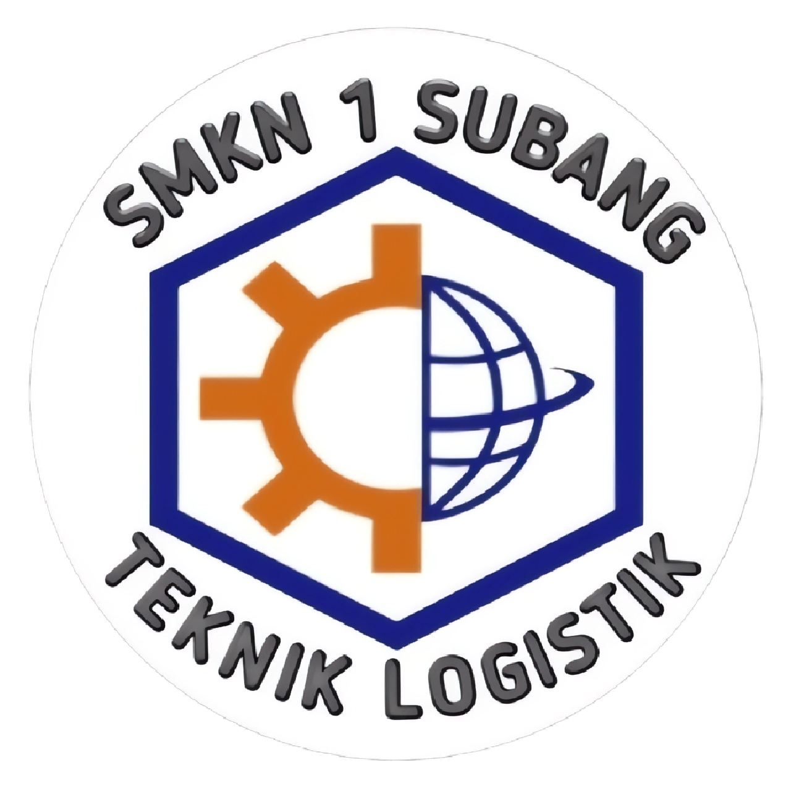
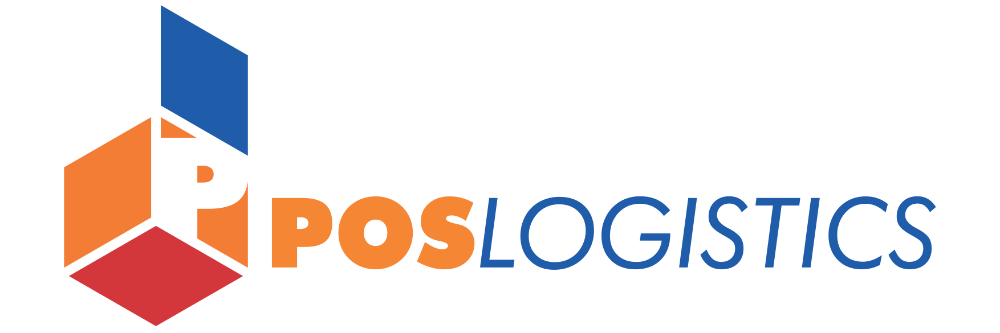

Teknik Logistik (TL)
Tentang TL
Logistik adalah bagian dari proses rantai suplai (supply chain) yang berfungsi merencanakan, melaksanakan, mengontrol secara efektif, efisien proses pengadaan, pengelolaan, penyimpanan barang, pelayanan dan informasi mulai dari titik awal (point of origin) hingga titik konsumsi (point of consumption) dengan tujuan memenuhi kebutuhan konsumen. Teknik Logistik merupakan salah satu keilmuan dari Teknik Industri. Teknik Logistik mengutamakan perencanaan, pemecahan masalah dengan prinsip keteknikan menggunakan ilmu-ilmu eksakta. Kompetensi Keahlian Teknik Logistik SMK Negeri 1 Subang menyiapkan lulusan yang menguasai ilmu pengetahuan dan teknologi di bidang logistik yang beriman kepada Tuhan Yang Maha Esa, profesional, terampil, jujur, disiplin dan memiliki jiwa wirausaha.
Materi yang Dipelajari
- Manajemen Rantai Pasok (Supply Chain Management)
- Distribusi dan Transportasi
- Manajemen Pergudangan
- Manajemen Inventaris
- Teknologi dalam Logistik
- Proses Ekspor dan Impor
- Logistik e-Commerce
- Keselamatan dan Kesehatan Kerja di Logistik
Prospek Karir Teknik Logistik
- Supply Chain Manager
- Manajer Pergudangan
- Koordinator Transportasi dan Distribusi
- Inventory Control Specialist
- Ekspedisi dan Freight Forwarding
- Logistics Analyst
- Manajer Operasional Logistik
- Entrepreneur di Bidang Logistik
Institusi Pasangan
